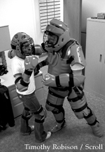

|
RAD program, Rexburg police help women learn self-defense
by Tammy McPherson
mcp00001@byui.edu
City Editor

 |
| Sergeant Steve Bunnell of the BYU-Idaho police department demonstrates the suit used in the rape aggression simulation course with freshman Nicole White of Rexburg. |
|
It’s not often police officers will allow somebody to hit or kick them and then let the person run away.
But when it comes to teaching female students techniques that can help them escape an attacker, some allowances are made — plus, body pads the officers wear during the training soften the blows.
“Our goal [is] to make women realize their own internal abilities,” Sgt. Steven Bunnell of the campus division of the Rexburg Police Department said. “We don’t just discuss punching and kicking.”
Demonstrations on campus are hosted by the Rape Aggression Defense System, sponsored by the campus police department.
The program teaches awareness, prevention, risk-reduction and risk-avoidance and teaches the basics of hands-on defense. The program has been on campus for about five months.
Bunnell approached Associated Women Students and asked if there would be enough interest within the group to start a class on campus.
The program is also open to the community, Bunnell said. Instructors hope to offer the course at high schools as soon as arrangements can be made.
The program is designed for women of all ages. Program originator Lawrence N. Nadeau said that if his 78-year-old grandmother could do the techniques, anyone could.
The program is taught at more than 1,000 colleges and universities and in police departments nationwide and in Canada.
The 12-hour course takes three weeks to complete with two classes a week, each lasting two to three hours. Class size is limited to 10 - 15 women. The first two classes focus on bookwork, statistics and being aware of one’s surroundings. Then women learn actual attack moves, Bunnell said.
“The point is not to beat them up,” Bunnell said. “The point is to get away. It teaches you something about what you’re prepared for inside.”
To finish the course, two officers simulate three different attacks. Completion is dependent on the student being able to move past a certain line.
“Mentally, you’re in the situation. You feel like you can’t go anywhere,” Elizabeth Allen, executive of Fall Focus on Women and a participant in one of the classes, said.
Hannah Hopkin, a freshman from Rexburg, was the first to complete the simulation.
“I didn’t think it [would] be that bad,” Hopkin said. “I was almost in tears after the first test. You have to practice what you learn or you’ll forget when you get in a situation; you panic.”
The instructors were put through 30 hours of intensive training. Every move had to be executed perfectly so the instructors would feel comfortable teaching, Emi Flamm, who was two months pregnant when she went through training in July, said.
“It was really hard,” Flamm said. “It wasn’t so much the emotions as my personality. I got frustrated when I was told that I was doing it wrong.”
The class with AWS was the first that Flamm helped instruct.
“The girls did great,” Flamm said. “They picked up on everything really fast.”
According to BYU-Idaho’s crime report for 2000, there was one forcible attack on campus in 1999 and one in 2000. Nevertheless, if training can prevent one attack, it’s well worth it, Bunnell said.
|